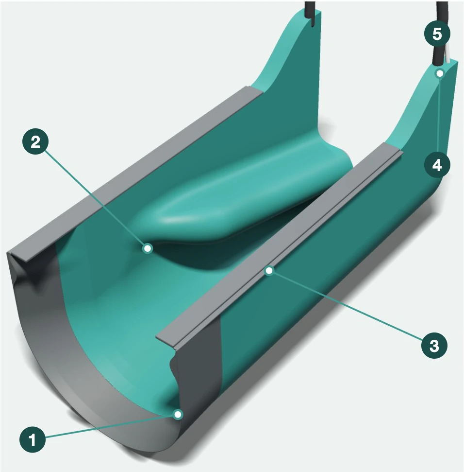
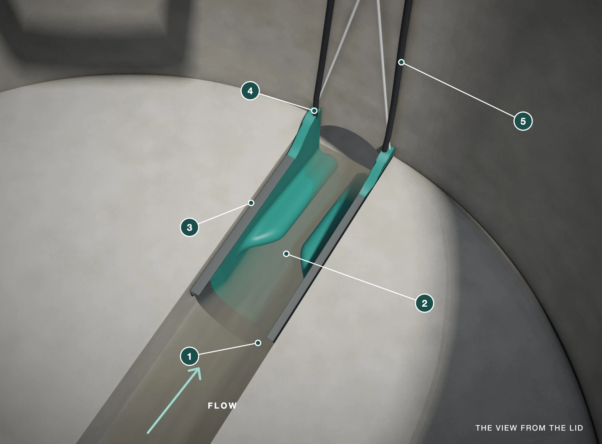
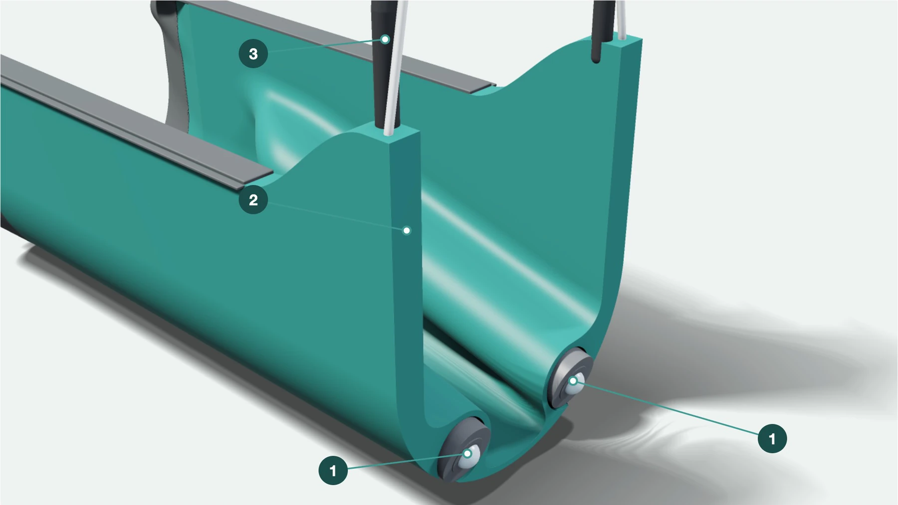

Analytical sensor mount for gravity sewers
Sensor Fort
The only mount built to put pH, EC and other analytical sensors in a gravity sewer, and keep them there. Rag has nothing to hold.

Utilities and industry want to know what’s in the sewer: pH, conductivity (EC), dissolved oxygen. The sensors exist. Getting them into a gravity sewer, and keeping them there and reading, has always been the hard part. Rag wraps round anything that faces the flow or crosses it, and fixing hardware in a manhole means confined space entry.
Sensor Fort lies in the open channel across the manhole floor (the chase), where you can see it from the lid. The flow runs through one smooth U, from a flexible feather edge to the stern, where two sensor tips sit in the wake. The cables run inside the walls and leave above the water.
EDS designed Sensor Fort and builds it in Brisbane, drawing on more than 30 years of experience and knowledge of sewers. It needs nothing to run except your sensors: no power, no pump and no moving parts. One person lowers it from the lid, the flow parks it against the outlet wall, and it’s designed for 12 months between visits.
There’s a version of Sensor Fort for every sewer size from 150 mm to 350 mm in diameter. The SF 150, shown here, is the one for 150 mm sewers.
It can give you flow as well. Add a level sensor to measure the depth of water, and flow is calculated from the depth curve of the Sensor Fort.
One smooth U. Nothing facing the flow.

- 1Flexible feather edge
- 2One smooth U, every corner a fillet
- 3Flexible lips seal the top edges
- 4Stern blocks: nothing spans the chase
- 5Cables leave above the water
Four ways to hold a sensor in a sewer.
None of them works, and none ever will.
Sewers are hard on sensors. Until now, a sensor in a gravity sewer has been hung, strapped, bolted or pumped. Each way leaves something in the flow for rag to hold, or something more to enter, power and maintain.
- Rag finds every edge
Wipes, hair and fibres wrap round anything that faces the flow or crosses it: a probe, a bracket, a cable.
- Fat, grit and surges
Fat coats, grit scours and storm flows hit hard. A loose sensor gets moved, and an exposed one gets fouled.
- Getting in costs
Fixing hardware in a manhole means confined space entry: a permit, a trained crew, a standby person and gas testing.
What doesn’t work
Swings, and collects rag
Hung on a Chain or Its Cable
The probe swings in the flow and collects rag. Sensor manuals warn against hanging a probe in a stream that carries debris.
Everything sits in the flow
Strapped to a Ring in the Pipe
Rings were made for flow sensors. The probe, its carrier and its cable all sit in the flow, out of sight in the pipe.
Needs entry, then catches rag
Bolted to a Bracket
Someone has to enter the manhole to drill and fix it, and the bracket itself becomes a rag catcher.
More to power, block and maintain
Pumped to a Cabinet
A pump, a sample line and a cabinet at the surface: more to power, more to block and more to maintain.
What does
- 1Flexible feather edge, pressed onto the chase
- 2One smooth U, with nothing facing the flow
- 3Flexible lips seal the top edges
- 4Stern blocks rest on the wall above the outlet
- 5Cable and tether leave above the water
- 6Sensor tips at the stern, in the wake
The answer
So EDS built Sensor Fort.
Nothing on the market was built for the job. Sensor Fort is a passive mount, designed from the ground up to hold analytical sensors in a gravity sewer, drawing on more than 30 years of working in them. It’s the only solution that puts sensors in a gravity sewer and gives rag nothing to hold. The design is EDS’s own, and patent pending.
- RagNo edge faces the flow, nothing spans the chase and no cable crosses the water.
- AccessOne person lowers it from the lid. No pole and no confined space entry.
- PositionThe flow parks it against the outlet wall, in the same place every time.
- UpkeepIt needs nothing to run except your sensors. Designed for 12 months between visits.
It lives in the chase, where you can see it.
Sensor Fort lies in the chase with its stern blocks against the wall above the outgoing pipe. The flow holds it there, and stainless ballast in the walls keeps it seated. Its shape does the rest.

- 1Flexible feather edge pressed onto the chase
- 2One smooth U channel, nothing facing the flow
- 3Flexible lips seal the top edges to the chase
- 4Stern blocks rest on the wall above the outlet
- 5Cables and tether run up the wall, above the water
- Lives in the chase
It sits in the open channel of the manhole, where it can be seen from the lid, not hidden in the pipe.
- Parks itself
The flow pushes it back until its stern blocks rest on the wall above the outlet. Same place, every time.
- Seals to the chase
A flexible feather edge and flexible lips press onto the chase floor and walls, so rag can’t get behind it.
- Cables out of the water
The cables run inside the walls and leave through the top of the stern blocks, 172 mm above the invert.
- Sensors in the wake
The sensor tips sit at the stern face, downstream of every surface, where nothing upstream can hold rag on them.
- Any maker’s sensors
Sleeves fit any maker’s sensor, with bodies up to 28.5 mm across in the SF 150, so you choose what suits your site.
Passive by design. There’s no power, no moving parts and no electrical parts in the mount. Its shape does the work, and the flow holds it in place.
Nothing for rag to hold.
Rag catches on four things. Sensor Fort has none of them.
Rag catches onAn edge that faces the flow
Sensor FortThe leading edge is a 0.8 mm flexible feather edge, pressed onto the chase. The only two edges in the flow both face downstream.
Rag catches onA gap it can be pushed into
Sensor FortThe flexible boot and lips seal the mount to the chase, from the leading edge round both top edges. Every inside corner is a fillet.
Rag catches onAnything that spans the flow
Sensor FortNothing crosses the chase. The walls themselves rise into the stern blocks that rest on the manhole wall.
Rag catches onAnything that flutters
Sensor FortNo cable or tether crosses the water. The cables run inside the walls, and the two tether legs run up the manhole wall.
Checked to 0.8 mm
- Points scanned
- 40,000
- Edges in the flow, both facing downstream
- 2
Every flow-facing surface of the design was ray scanned at 40,000 points for slots, crevices and fins finer than 0.8 mm. Each one is a place where fibres can start a rag ball.
How it compares.
Sensor Fort beside the common ways of placing an analytical sensor in a gravity sewer.
| Sensor Fort | Chain or cable | Ring in the pipe | Bracket | |
|---|---|---|---|---|
| Only the sensor tips meet the flow | Yes | No | No | No |
| Cables kept out of the water | Yes | No | No | No |
| Sealed to the channel, with no gap for rag | Yes | No | No | No |
| Installed from the lid, with no confined space entry | Yes | Yes | Yes | No |
| Sits in the same place every time | Yes | No | Yes | Yes |
| Takes any maker’s sensors | Yes | Yes | Adaptors | Yes |
Rings in the pipe can be fitted from the street with a pole, and may need adaptors for other makers' probes.
Installed from the lid.
One person. No pole. No confined space entry. Nothing drilled or fixed in the chase.
- 1Clip on and lower
Clip the snap hook to the anchor under the lid, then lower the mount down the wall above the outgoing pipe.
- 2Nose lands first
It hangs nose low, so the nose lands in the chase first. Keep lowering and it lies down pointing upstream.
- 3Parked by the flow
The stern blocks rest on the wall and the flow holds them there. Hang the spare tether and cables on the step iron.
Coming out. Unclip the tether and lift. The stern rises first and the mount comes up the shaft nose low. Nothing grips the chase, so there’s nothing to break free.
Where the SF 150 fits
- A 150 mm sewer with a straight-through manhole
- A straight chase at least 350 mm long to the outlet wall
- A chase 147 to 153 mm wide, with walls at least 137 mm high
- The top of the outlet pipe (the obvert) no more than 165 mm above the invert
- No drop or step at the outlet, with the pipe flush or proud
- Precast bases with formed channels suit it best
A version for every sewer size. Sensor Fort is made for every sewer size from 150 mm to 350 mm in diameter. These figures are for the SF 150, the version for 150 mm sewers. Tell us the size of your sewer and we’ll match the version to it.
Serviced at the Surface
- Lift out, lower back
Lift the mount out, service the sensors at the surface and lower it back. Or swap it for a prepared mount.
- 12 months between visits
That’s the interval Sensor Fort is designed for. The tether stays on as a slack safety line.
- What no mount can do
No mount stops biofilm growing or a pH reference ageing, so sensor choice and data checks still apply.
Your sensors. Your network.
Choose the sensors that suit your site and your zone. Sensor Fort holds them in the flow, and EDS can log them.

- 1Sensor tips at the stern face, in the wake
- 2Stern blocks, with flat backs on the manhole wall
- 3Cables and tether leave through the top of the blocks
- In each mount
- 2 sensors
- Largest body, SF 150
- 28.5 mm
- With sensors that fit
- 17 makers
- Of 63 surveyed
- 30 models
From the EDS survey of pH, ORP, four-electrode conductivity and dissolved oxygen sensors, November 2026, for the SF 150. The versions for larger sewers, up to 350 mm, can take larger sensor bodies. Please confirm your sensor with us before you order.
Makers with Sensors That Fit
Sensor Fort takes any maker’s sensor in a size that fits. Each of these 22 makers publishes at least one pH, ORP or dissolved oxygen sensor in a size the SF 150 takes, most of them as the standard 12 mm electrode.
- ABB
- Aqualabo
- Broadley-James
- Bürkert
- Emerson (Rosemount)
- Endress+Hauser
- Hach
- Hamilton
- Hanna Instruments
- Honeywell
- Ionode
- JUMO
- Knick
- Krohne
- Kuntze
- Mettler Toledo
- ProMinent
- Schneider Electric (Foxboro)
- Sensorex
- SI Analytics
- WTW
- Yokogawa
Listed from the makers' published dimensions, November 2026, separately from the survey above. Not every model from each maker fits, so please confirm your sensor with us before you order. Names and trade marks belong to their owners.
Sleeves and Parts for the SF 150
| 12 mm | Threaded sleeve for 12 mm electrodes 120 mm long with a PG13.5 thread |
|---|---|
| 22 to 26.7 mm | Split sleeves for 22.0, 22.9, 25.4, 26.0 and 26.7 mm bodies; the 26.7 mm sleeve also suits 3/4 inch NPT |
| 28 to 28.5 mm | Shims, as these bodies pass the stern ring bare |
| Tail ring, plug | A tail ring centres the rear of a slim body; a blanking plug closes an unused bay |
| Plug head | Allow up to 24 mm across the plug head and cable coupling |
| Cable | Up to 8.5 mm in diameter, laid inside the walls |
- One format fits all
pH, ORP, conductivity and dissolved oxygen sensors are all made as 12 mm electrodes, which fit the SF 150.
- Conductivity
Use a slim four-electrode sensor in the SF 150. Inductive heads need clear water all round, and suit larger sewers.
- Certified for your zone
The mount has no electrical parts. Sensors and loggers carry their own certification, so you choose the ones certified for your zone.
Flow from the same site. Each Sensor Fort has its own depth curve, which relates the depth of water to the flow. Add a level sensor to measure the depth, and flow can be calculated from that curve. One site then gives you flow as well as water quality.
A Complete Monitoring Point from One Brisbane Team
- Sensor Fort
Holds the sensors in the chase and keeps rag off them.
- Your sensors
pH, ORP, conductivity or dissolved oxygen, from any maker.
- A level sensor
Measures the depth, so flow can be calculated from the Sensor Fort’s depth curve.
- EDS Metalog 4G
Logs analogue and Modbus instruments and reports over 4G.
Where it works.
Trade Waste
pH and conductivity at a discharge point or in the receiving sewer.
Source Tracking
Paired sites that narrow down where an abnormal discharge enters the network.
Saline Ingress
Conductivity changes that reveal saline water entering the network.
Odour and Dosing
pH and ORP trends that support septicity and chemical dosing studies.
Installing pH, EC and water quality sensors in a sewer.
Short answers. The detail is above, and in the datasheet.
How do you install a pH or EC sensor in a sewer?
Mount it where rag can’t catch it. Sensor Fort lies in the chase of a manhole, lowered from the lid by one person on its tether. The sensors lie inside its walls, 15° tip down, with only their tips in the flow at the stern. There’s no pole, no confined space entry and nothing drilled or fixed in the chase.
Why do water quality sensors foul in a sewer?
Mostly because of how they’re held. Rag wraps round anything that faces the flow or crosses it: a probe, a bracket, a cable. Fat coats, grit scours, and storm flows move a loose sensor. Chains, rings, brackets and pumped cabinets all leave something for rag to hold or something more to maintain.
Which water quality sensors can be installed in a sewer with Sensor Fort?
Any cylindrical sensor that measures at its tip, from any maker: pH, ORP, four-electrode conductivity (EC) and dissolved oxygen. The SF 150 holds two sensors with bodies up to 28.5 mm across. In our November 2026 survey, 30 of 63 models from 17 makers fit it, and all four types are made as 12 mm electrodes, which fit. The versions for larger sewers can take larger sensor bodies. Check your sensor with us before you order.
What size sewer does it suit?
There’s a version of Sensor Fort for every gravity sewer size from 150 mm to 350 mm in diameter. Each needs a straight-through manhole with a straight chase. The SF 150, for 150 mm sewers, suits a chase 147 to 153 mm wide, with at least 350 mm of straight chase to the outlet wall.
Can I measure flow at the same site?
Yes. Add a level sensor to measure the depth of water, and flow can be calculated from the depth curve of the Sensor Fort. One site then gives you flow as well as water quality.
Does it need confined space entry?
No. One person lowers it from the lid on its tether, and lifts it out the same way. Nothing is drilled or fixed in the chase.
How often do sensors in a sewer need servicing?
Sensor Fort is designed for 12 months between visits. Lift it out, service the sensors at the surface and lower it back, or swap it for a prepared mount. No mount stops biofilm growing or a pH reference ageing, so sensor choice and data checks still apply.
Does it need power or a pump?
No. Sensor Fort needs nothing to run except your sensors. It’s passive, with no power, no moving parts and no electrical parts. The sensors connect to your own logger, or to an EDS Metalog 4G, which logs analogue and Modbus instruments and reports over 4G.
Who makes Sensor Fort?
EDS (Environmental Data Services) designed Sensor Fort and builds it in Brisbane, Queensland, drawing on more than 30 years of experience in sewer monitoring. The design is EDS’s own, and patent pending. Call about it and you talk to the people who designed it.
Specifications
Sensor Fort in detail.
- Flexible nose boot and top strips
- Cable route, inside the wall
- Sensor in its bay, 15° tip down
General
| Product | Sensor Fort SF 150, the version for 150 mm sewers |
|---|---|
| Range | A version for every sewer size from 150 mm to 350 mm in diameter |
| Function | Holds two analytical sensors in the chase of a maintenance hole, with only their tips in the flow |
| Sewer | DN150, straight-through maintenance hole |
| Operation | Passive: no power, moving or electrical parts |
| Origin | Designed and built by EDS in Brisbane, Queensland |
| Patent | Pending. The design is owned by EDS |
Dimensions and Weight
| Length | 345 mm, boot tip to stern block backs |
|---|---|
| Width | 146.9 mm rigid; 154 mm over the flexible lips |
| Height | 135 mm walls (136.5 mm over the strips); 175 mm stern blocks |
| Mass | About 2.24 kg before sensors, including 0.95 kg of 316 ballast |
| In water | About 12.7 N with two sensors (10.7 N empty) |
Materials
| Body | High-strength engineering polymer, solid throughout |
|---|---|
| Boot, strips | Tough, flexible engineering elastomer that holds its seal for years; bonded with an immersion-rated sealant |
| Ballast | 316 stainless flat bar, flush in the wall sides |
| Tether, screws | 316 stainless steel |
Sensor Bays
| Number | Two; a blanking plug closes an unused bay |
|---|---|
| Sensor size | Bodies to 28.5 mm across and 190 mm rigid length, head and gland included |
| Attitude | 15° tip down, tips at the stern face, in the wake of the mount |
| Types | Any cylindrical sensor that measures at its tip: pH, ORP, four-electrode conductivity, dissolved oxygen |
| Fastening | A sleeve for each sensor; one clamp bar and one M5 × 16 316 screw hold both |
Flow Surface
| Shape | One smooth U from a 0.8 mm feather edge to the stern face; every concave corner is a fillet |
|---|---|
| Edges in flow | Two, and both face downstream |
| Seal | Flexible boot flared to 154 mm, 0.5 mm below the invert; flexible lips on both top edges |
| Surface check | Ray scanned at 40,000 points for slots, crevices and fins finer than 0.8 mm |
| Hydraulics | Floor lifted about 2 to 3 mm; the cheeks narrow the channel at the stern |
| Flow | With a level sensor, flow can be calculated from the depth curve of the Sensor Fort |
Cables and Tether
| Cable route | Inside the walls, out of the top of the stern blocks 172 mm above the invert, then up the manhole wall |
|---|---|
| Cable size | Up to 8.5 mm; no ports, clamps or screws |
| Tether | Two 3 mm 316 legs from the stern blocks, a 5 mm quick link, 3 mm 316 main tether and snap hook |
| Anchor | 316 eye bolt below the frame, or the top step iron, as the asset owner allows |
Installation
| Access | From the lid by one person; no pole, no confined space entry, nothing fixed in the chase |
|---|---|
| Position | In the chase pointing upstream, stern blocks on the outlet wall above the obvert |
| Retention | The flow holds it to the wall and the ballast seats it; the tether is a slack safety line |
| Site | Straight chase 147 to 153 mm wide and at least 350 mm long; walls at least 137 mm high; obvert no more than 165 mm above the invert |
Service
| Method | Lift out, service at the surface and lower back, or swap for a prepared mount |
|---|---|
| Interval | Designed for 12 months between visits |
| Sensor care | No mount stops biofilm or reference ageing; sensor choice and data checks still apply |
| Hazardous areas | No electrical parts; sensors and loggers carry their own certification |
Dimensions are in millimetres. Masses and weights in water are calculated from the SF 150 design, and don’t include sensors, loggers or cables unless stated. Specifications may change as the product develops. Full details are in the Sensor Fort datasheet.
Tell us about your sewer and your sensors.
Give us the sewer diameter, the chase width, wall height and obvert height, and the sensors you want to use. We’ll confirm which size suits, the fit and the sleeves, and we’re happy to talk about a trial.